Page layout
Storyboard
Purpose of Each Page
Home Page
The Home page serves as a page that visitors see before exploring the rest of the website
The Home page will introduce the reader to a background of who i am and what i'm currently studying along
with examples of my favorite pieces and it also provides a means of contacting me.
Professional Page
The professional Page of this website serves to introduce the reader to my qualities through viewing my resume
It also highlights my personal beliefs.
Personal Page
The personal page of this website dives deeper into who i am as a person, showcasing my traits
My likes and dislikes, my hobbies and also a personality test that was taken.
My Storyboard
The storyboard page, outlines what the website contains and the purpose for me creating each pages
The page also talks about the whole theme of the website along with the target audience
I hope you enjoyed😀
Reference Page
This page contains all the links of sources used to design and develop the website as to avoid plagiarism
Theme of Site
This website is a staatic website that involves the wide use of graphics and embedded links to give the website a more interactive look
A simple color scheme of 4 colors was used to keep the website simple but also to keep the design consistent.
Font sizes vary throughout the website to distiguish topics from subtopics and to capture the readers attention.
The font color for the text were kept simple and consistent but it still allowed to reader to point out different
subheadings. Overall images were used to have a better user interation since this website was made using stritcly HTML.
Target Audience
The target audience of this website is for the general pubilc hence the theme and heavy use of graphics.
Features
The features of this website is not limited to many graphics,
- Use of special HTML5 Tags
- HyperLinks
- Emojis and special symbols
- Internal links used to navigate to the top of the page
- Bookmarks
- Youtube video
- Maps